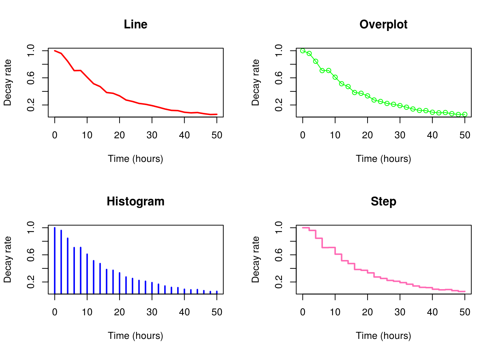
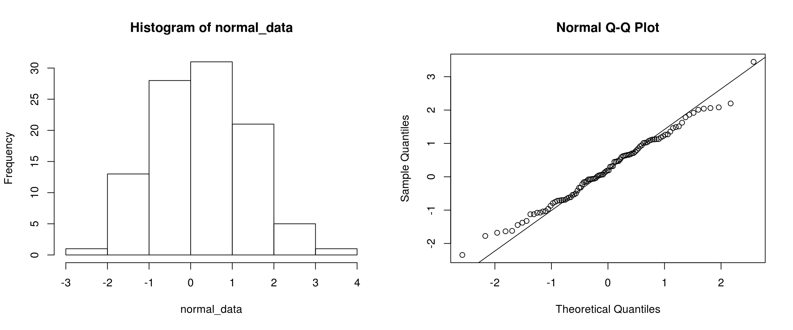
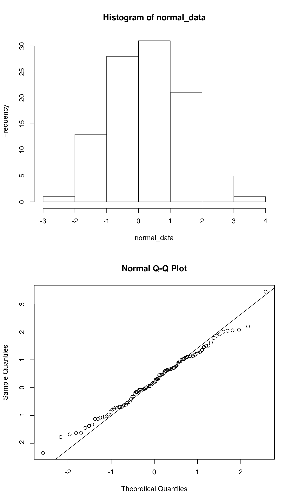
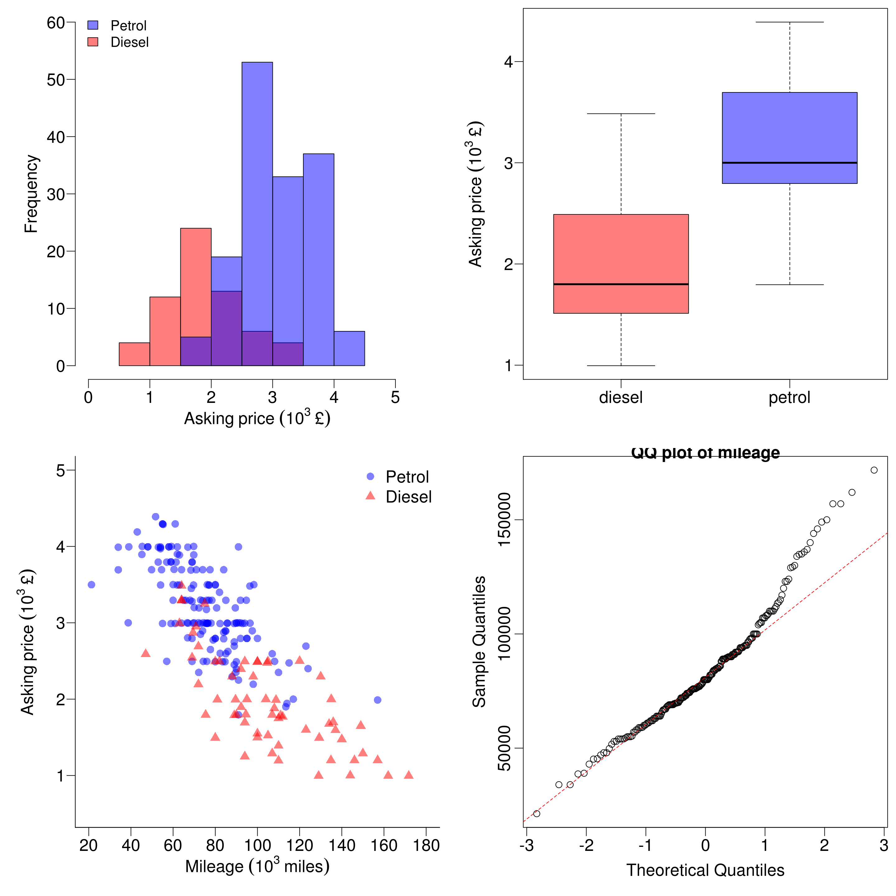

Chapter 9 Multiple plots
You may have noticed in one of the previous examples, that two plots were produced one on top of the other. This is a pretty easy thing to accomplish.
All we need to do is split the plotting area with the par(mfrow=c(x,y)) command. As with subscripts, with this command x codes for the number of rows, and y represents the number of columns. Check ?par for more information.
par(mfrow = c(2,2))
with(
sapdecay,
plot(
x = x,
y = y,
xlab = "Time (hours)",
ylab = "Decay rate",
type = "l",
col = "red",
lwd = 2,
main = "Line"
)
)
with(
sapdecay,
plot(
x = x,
y = y,
xlab = "Time (hours)",
ylab = "Decay rate",
type = "o",
col = "green",
lwd = 1,
main = "Overplot"
)
)
with(
sapdecay,
plot(
x = x,
y = y,
xlab = "Time (hours)",
ylab = "Decay rate",
type = "h",
col = "blue",
lwd = 2,
main = "Histogram"
)
)
with(
sapdecay,
plot(
x = x,
y = y,
xlab = "Time (hours)",
ylab = "Decay rate",
type = "s",
col = "hotpink",
lwd = 2,
main = "Step"
)
)
# It's important that we reset the mfrow parameter at the end of plotting,
# otherwise all subsequent plots will appear on this four by four grid, which
# may not be what we want.
par(mfrow = c(1,1))Using this method, it’s also perfectly possible to combine plots of two different types, and plot them next to each other.
Let’s imagine that we want to test whether a variable is normally distributed - there are two very simple graphical commands built into R that make this easier: qqnorm and qqline. These commands produce quantile-quantile plots for the normal distribution. Essentially if the data are normally distributed, they will conform to the straight line[1].
First we will create a vector of random numbers drawn from a normal distribution - so we already know that they are normal!
normal_data <- rnorm(
100,
mean=0,
sd=1
)
normal_data## [1] 0.19249191 -1.44670181 -0.32318053 1.62229612 -0.68902412
## [6] 2.04212222 0.94377911 2.08192688 1.91711728 -0.41481224
## [11] 1.03285350 -1.67856959 0.15754969 1.48913612 -0.07578956
## [16] 1.27178094 0.64167341 0.80076125 1.86265923 -0.54535603
## [21] 0.61927781 0.12264043 -0.79098417 -0.49977167 -1.63515201
## [26] 1.78456732 0.29887827 0.75250489 -1.07460214 0.06427374
## [31] 1.26264948 1.09994930 -1.12355513 3.44607885 -0.71972217
## [36] -0.32685410 -0.52977397 0.52415274 -1.07960965 -0.05511102
## [41] 2.19868418 -1.77390933 0.06503223 0.65497038 -0.71286911
## [46] 1.02056754 0.63161472 0.44743335 0.46653706 -0.69826061
## [51] -0.03645455 1.11796617 -0.70008253 -1.12404818 -0.61306728
## [56] 1.01244271 -2.34387016 0.59026309 0.31913434 0.70160645
## [61] -1.37745713 0.31264588 1.12084758 0.47183089 1.12768532
## [66] 0.67772314 1.51023992 2.06103435 -0.65031591 -1.32423767
## [71] 0.65947131 -0.22142515 -0.96215911 0.18746019 0.01224463
## [76] 0.71228374 -0.75372581 0.03818993 1.17842106 -0.15320385
## [81] -0.16169753 1.46026211 2.00945844 -0.07793822 1.35434208
## [86] -1.02718379 -1.04117532 -0.87062302 0.85313022 -0.62276019
## [91] 1.21570987 -1.62140875 -0.06857533 -0.06298292 1.07570771
## [96] 1.12910075 0.45014673 0.05058644 -0.12433022 0.91201146And now…some plots. First, two plots side by side.
par(
mfrow=c(1,2)
)
# Remember that the first number is the number of rows, the latter is the number
# of columns. So here, we have specified one row, two columns...
# Now the plots:
hist(normal_data)
qqnorm(normal_data)
qqline(normal_data)
So things should look pretty normal. In this example we have not specified a ‘seed’ (see ?set.seed for more info). So every time that you run the code, you will get a different set of randomly generated numbers drawn from a normal distribution.
All well and good, but what about one above the other? Just changed the 1 and 2 around in the par(mfrow=c(x,y)) command.
par(mfrow=c(2,1))
# Remember that the first number is the number of rows, the latter is the number
# of columns. So here, we have specified one row, two columns...
# Now the plots:
hist(normal_data)
qqnorm(normal_data)
qqline(normal_data)
9 Exercise
Using what you have learnt in the previous sections, and the data from the car_prices, have a go at reproducing the plots you see below. Most of what you need to know has been covered, though you will need to consult the help files for certain commands.
car_prices <- read.table(
"discount.csv",
header = T,
sep = ","
)
par(
mar = c( 4.1, 4.5, 0.5, 0.5),
mgp = c( 2.1, 0.6, 0),
mfrow = c(2,2),
cex = 1.4,
cex.lab = 1.2,
cex.axis = 1.2,
lend="square"
)
diesel <- subset(car_prices,fuel == "diesel")
petrol <- subset(car_prices,fuel == "petrol")
p1<-hist(
diesel$price,
ylim = c(0,60),
col = rgb(1,0,0,0.5), # Note that the colours used must be those that allow transparency
main = "",
breaks = 8,
xlab = bquote(Asking~price~(10^3~"£")),
xlim = c(5,5500),
yaxt = "n",
xaxt = "n"
)
# plot second graph - note use of 'add = TRUE' to overlay onto the first plot
p2<-hist(
petrol$price,
breaks = 8,
add = TRUE,
col = rgb(0,0,1,0.5)
)
axis(
side = 2,
at = seq(0,60,10),
las = 2
)
axis(
side = 1,
labels = seq(0,5,1),
at = seq(0,5000,1000),
las = 1
)
legend(
"topleft",
legend = c("Petrol","Diesel"),
fill = c(rgb(0,0,1,0.5),rgb(1,0,0,0.5)),
bty = "n"
)
boxplot(
split(
car_prices$price,
car_prices$fuel
),
col = c(rgb(1,0,0,0.5),rgb(0,0,1,0.5)),
ylab = bquote(Asking~price~(10^3~"£")),
yaxt = "n"
)
axis(
side = 2,
labels = seq(0,10,1),
at = seq(0,10000,1000),
las = 2
)
with(
petrol,
plot(
miles,
price,
col = rgb(0,0,1,0.5),
ylim = c(500,5000),
xlim=c(20000,180000),
xlab = bquote(Mileage~(10^3~miles)),
ylab = bquote(Asking~price~(10^3~"£")),
yaxt = "n",
xaxt = "n",
bty = "l",
pch = 16,
cex = 1.2
)
)
with(
diesel,
points(
miles,
price,
col = rgb(1,0,0,0.5),
pch = 17,
cex = 1.2
)
)
axis(
side = 2,
labels = seq(0,10,1),
at = seq(0,10000,1000),
las = 2
)
axis(
side = 1,
at = seq(0,200000,20000),
labels = seq(0,200,20)
)
legend(
"topright",
col = c(rgb(0,0,1,0.5),rgb(1,0,0,0.5)),
legend = c("Petrol","Diesel"),
pch = c(16:17),
bty = "n",
cex = 1.2
)
###############
qqnorm(
car_prices$miles,
main = "QQ plot of mileage"
)
qqline(
car_prices$miles,
col = "red",
lty = 2
)
# boxplot(
# split(
# car_prices$miles/car_prices$price,
# car_prices$fuel
# ),
# col = c(rgb(1,0,0,0.5),rgb(0,0,1,0.5)),
# ylab = bquote(Miles~"£"^-1),
# yaxt = "n"
# )
# axis(
# side = 2,
# at = seq(0,200,40),
# las = 2
# )
par(mfrow=c(1,1))< id=“footnote-1”>[1] I’m not going to dwell on the reasons why this is so - we’re more interested in the plotting graphs than the statistics behind it in this sections, but if you don’t understand what is going on here, you should look it up! http://en.wikipedia.org/wiki/Q-Q_plot.